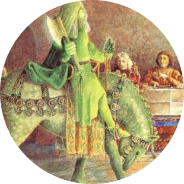

|  |
|
𝔗𝔥𝔢 𝔗𝔞𝔩𝔢 𝔬𝔣 𝔖𝔦𝔯 𝔊𝔞𝔴𝔞𝔦𝔫
𝕴𝖙 𝕭𝖊𝖌𝖎𝖓𝖘
|
𝔖𝔦𝔫𝔠𝔢 𝔗𝔯𝔬𝔶’𝔰 𝔞𝔰𝔰𝔞𝔲𝔩𝔱 𝔞𝔫𝔡 𝔰𝔦𝔢𝔤𝔢, ℑ 𝔱𝔯𝔬𝔴, 𝔴𝔢𝔯𝔢 𝔬𝔳𝔢𝔯-𝔭𝔞𝔰𝔱,
𝔗𝔬 𝔟𝔯𝔞𝔫𝔡𝔰 𝔞𝔫𝔡 𝔞𝔰𝔥𝔢𝔰 𝔟𝔲𝔯𝔫𝔱 𝔱𝔥𝔞𝔱 𝔰𝔱𝔞𝔱𝔢𝔩𝔶 𝔟𝔲𝔯𝔤 𝔞𝔱 𝔩𝔞𝔰𝔱,
𝔄𝔫𝔡 𝔥𝔢, 𝔱𝔥𝔢 𝔱𝔯𝔞𝔦𝔱𝔬𝔯 𝔭𝔯𝔬𝔳𝔢𝔡, 𝔣𝔬𝔯 𝔱𝔯𝔢𝔞𝔰𝔬𝔫 𝔱𝔥𝔞𝔱 𝔥𝔢 𝔴𝔯𝔬𝔲𝔤𝔥𝔱,
𝔚𝔞𝔰 𝔣𝔦𝔱𝔩𝔶 𝔱𝔯𝔦𝔢𝔡 𝔞𝔫𝔡 𝔧𝔲𝔡𝔤𝔢𝔡,—𝔥𝔦𝔰 𝔣𝔬𝔯𝔱𝔲𝔫𝔢 𝔢𝔩𝔰𝔢𝔴𝔥𝔢𝔯𝔢 𝔰𝔬𝔲𝔤𝔥𝔱
𝔗𝔥𝔢 𝔱𝔯𝔲𝔢𝔰𝔱 𝔨𝔫𝔦𝔤𝔥𝔱 𝔬𝔫 𝔢𝔞𝔯𝔱𝔥, Æ𝔫𝔢𝔞𝔰, 𝔴𝔦𝔱𝔥 𝔥𝔦𝔰 𝔨𝔦𝔫,
𝔚𝔥𝔬 𝔳𝔞𝔫𝔮𝔲𝔦𝔰𝔥𝔢𝔡 𝔭𝔯𝔬𝔳𝔦𝔫𝔠𝔢𝔰, 𝔞𝔫𝔡 𝔡𝔦𝔡, 𝔞𝔰 𝔭𝔯𝔦𝔫𝔠𝔢𝔰, 𝔴𝔦𝔫
𝔒𝔣 𝔞𝔩𝔩 𝔱𝔥𝔢 𝔚𝔢𝔰𝔱𝔢𝔯𝔫 ℑ𝔰𝔩𝔢𝔰, 𝔱𝔥𝔢 𝔴𝔢𝔞𝔩𝔱𝔥 𝔞𝔫𝔡 𝔴𝔬𝔯𝔱𝔥 𝔞𝔩𝔴𝔞𝔶;
ℜ𝔦𝔠𝔥 ℜ𝔬𝔪𝔲𝔩𝔲𝔰 𝔱𝔬 ℜ𝔬𝔪𝔢 𝔣𝔲𝔩𝔩 𝔰𝔴𝔦𝔣𝔱 𝔥𝔞𝔱𝔥 𝔱𝔞’𝔢𝔫 𝔥𝔦𝔰 𝔴𝔞𝔶,
𝔉𝔦𝔯𝔰𝔱, 𝔥𝔞𝔱𝔥 𝔥𝔢 𝔣𝔬𝔲𝔫𝔡𝔢𝔡 𝔣𝔞𝔦𝔯 𝔱𝔥𝔞𝔱 𝔠𝔦𝔱𝔶 𝔦𝔫 𝔥𝔦𝔰 𝔭𝔯𝔦𝔡𝔢
𝔗𝔬 𝔴𝔥𝔦𝔠𝔥 𝔥𝔢 𝔤𝔞𝔳𝔢 𝔥𝔦𝔰 𝔫𝔞𝔪𝔢, 𝔦𝔱 𝔟𝔢𝔞𝔯𝔰 𝔦𝔱 𝔱𝔬 𝔱𝔥𝔦𝔰 𝔱𝔦𝔡𝔢;
𝔗𝔦𝔠𝔦𝔲𝔰 𝔡𝔬𝔱𝔥 𝔡𝔴𝔢𝔩𝔩𝔦𝔫𝔤𝔰 𝔣𝔬𝔲𝔫𝔡, 𝔱𝔲𝔯𝔫𝔦𝔫𝔤 𝔱𝔬 𝔗𝔲𝔰𝔠𝔞𝔫𝔶,
𝔄𝔫𝔡 𝔏𝔞𝔫𝔤𝔬𝔟𝔞𝔯𝔡, 𝔞 𝔯𝔞𝔠𝔢 𝔯𝔞𝔦𝔰𝔢𝔡 𝔲𝔭 𝔦𝔫, 𝔏𝔬𝔪𝔟𝔞𝔯𝔡𝔶.
𝔅𝔲𝔱 𝔉𝔢𝔩𝔦𝔵 𝔅𝔯𝔲𝔱𝔲𝔰 𝔰𝔞𝔦𝔩𝔢𝔡 𝔣𝔲𝔩𝔩 𝔣𝔞𝔯, 𝔬’𝔢𝔯 𝔱𝔥𝔢 𝔉𝔯𝔢𝔫𝔠𝔥 𝔣𝔩𝔬𝔬𝔡,
𝔄𝔫𝔡 𝔬𝔫 𝔦𝔱𝔰 𝔟𝔞𝔫𝔨𝔰 𝔰𝔬 𝔟𝔯𝔬𝔞𝔡 𝔣𝔬𝔲𝔫𝔡𝔢𝔡 𝔅𝔯𝔦𝔱𝔞𝔦𝔫,
𝔱𝔥𝔢 𝔤𝔬𝔬𝔡 𝔦𝔫 𝔟𝔩𝔦𝔰𝔰;
𝔚𝔥𝔢𝔯𝔢 𝔴𝔞𝔯 𝔫𝔬𝔯 𝔴𝔬𝔫𝔡𝔢𝔯 𝔣𝔞𝔦𝔩
𝔄𝔫𝔡 𝔫𝔢’𝔢𝔯 𝔥𝔞𝔳𝔢 𝔡𝔬𝔫𝔢, 𝔶𝔴𝔦𝔰,
𝔑𝔬𝔯 𝔰𝔥𝔞𝔩𝔩 𝔟𝔬𝔱𝔥 𝔟𝔩𝔦𝔰𝔰 𝔞𝔫𝔡 𝔟𝔞𝔩𝔢
𝔱𝔥𝔢𝔦𝔯 𝔰𝔥𝔦𝔣𝔱𝔦𝔫𝔤 𝔠𝔥𝔞𝔫𝔠𝔢𝔰 𝔪𝔦𝔰𝔰.
𝔄𝔫𝔡 𝔴𝔥𝔢𝔫 𝔱𝔥𝔞𝔱 𝔟𝔞𝔯𝔬𝔫 𝔟𝔬𝔩𝔡 𝔥𝔞𝔡 𝔅𝔯𝔦𝔱𝔞𝔦𝔫 𝔪𝔞𝔡𝔢, ℑ 𝔱𝔯𝔬𝔴,
𝔅𝔬𝔩𝔡 𝔪𝔢𝔫 𝔴𝔢𝔯𝔢 𝔟𝔯𝔢𝔡 𝔱𝔥𝔢𝔯𝔢𝔦𝔫, 𝔴𝔥𝔬 𝔩𝔬𝔳𝔢𝔡 𝔰𝔱𝔯𝔦𝔣𝔢 𝔴𝔢𝔩𝔩 𝔢𝔫𝔬𝔴,
𝔄𝔫𝔡 𝔪𝔞𝔫𝔶 𝔞 𝔴𝔞𝔯 𝔱𝔥𝔢𝔶 𝔴𝔞𝔤𝔢𝔡 𝔦𝔫 𝔱𝔥𝔬𝔰𝔢 𝔤𝔬𝔬𝔡 𝔡𝔞𝔶𝔰 𝔬𝔣 𝔶𝔬𝔯𝔢—
𝔒𝔣 𝔪𝔞𝔯𝔳𝔢𝔩𝔰 𝔰𝔱𝔢𝔯𝔫 𝔞𝔫𝔡 𝔰𝔱𝔯𝔞𝔫𝔤𝔢, 𝔦𝔫 𝔱𝔥𝔦𝔰 𝔩𝔞𝔫𝔡 𝔪𝔞𝔫𝔶 𝔪𝔬𝔯𝔢
ℌ𝔞𝔳𝔢 𝔠𝔥𝔞𝔫𝔠𝔢𝔡 𝔱𝔥𝔞𝔫 𝔬𝔱𝔥𝔢𝔯𝔴𝔥𝔢𝔯𝔢, 𝔰𝔦𝔫𝔠𝔢 𝔱𝔥𝔞𝔱 𝔰𝔞𝔪𝔢 𝔱𝔦𝔪𝔢, ℑ 𝔴𝔢𝔢𝔫—
𝔅𝔲𝔱 𝔬𝔣 𝔞𝔩𝔩 𝔨𝔦𝔫𝔤𝔰 𝔴𝔥𝔬 𝔢’𝔢𝔯 𝔬’𝔢𝔯 𝔅𝔯𝔦𝔱𝔞𝔦𝔫 𝔩𝔬𝔯𝔡𝔰 𝔥𝔞𝔳𝔢 𝔟𝔢𝔢𝔫,
𝔉𝔞𝔦𝔯𝔢𝔰𝔱 𝔴𝔞𝔰 𝔄𝔯𝔱𝔥𝔲𝔯 𝔞𝔩𝔩, 𝔞𝔫𝔡 𝔟𝔬𝔩𝔡𝔢𝔰𝔱, 𝔰𝔬 𝔪𝔢𝔫 𝔱𝔢𝔩𝔩;
𝔗𝔥𝔢𝔯𝔢𝔣𝔬𝔯𝔢 ℑ 𝔱𝔥𝔦𝔫𝔨 𝔱𝔬 𝔰𝔥𝔢𝔴 𝔞 𝔳𝔢𝔫𝔱𝔲𝔯𝔢 𝔱𝔥𝔞𝔱 𝔟𝔢𝔣𝔢𝔩𝔩
ℑ𝔫 𝔥𝔦𝔰 𝔱𝔦𝔪𝔢, 𝔴𝔥𝔦𝔠𝔥 𝔰𝔬𝔪𝔢 𝔪𝔢𝔫 𝔣𝔬𝔯 𝔞 𝔰𝔥𝔢𝔢𝔯 𝔴𝔬𝔫𝔡𝔢𝔯 𝔥𝔬𝔩𝔡,
𝔄𝔫𝔡 𝔰𝔱𝔯𝔞𝔫𝔤𝔢 𝔞𝔟𝔬𝔳𝔢 𝔞𝔩𝔩 𝔱𝔞𝔩𝔢𝔰 𝔱𝔥𝔞𝔱 𝔟𝔢 𝔬𝔣 𝔄𝔯𝔱𝔥𝔲𝔯 𝔱𝔬𝔩𝔡.
ℑ𝔣 𝔶𝔢 𝔴𝔦𝔩𝔩 𝔩𝔦𝔰𝔱 𝔱𝔥𝔦𝔰 𝔩𝔞𝔶 𝔞 𝔩𝔦𝔱𝔱𝔩𝔢 𝔴𝔥𝔦𝔩𝔢, 𝔦𝔫 𝔰𝔬𝔬𝔱𝔥,
ℑ’𝔩𝔩 𝔱𝔢𝔩𝔩 𝔶𝔢 𝔞𝔰 ℑ 𝔥𝔢𝔞𝔯𝔡 𝔦𝔱 𝔱𝔬𝔩𝔡 𝔦𝔫 𝔱𝔬𝔴𝔫 𝔣𝔬𝔯 𝔱𝔯𝔲𝔱𝔥
𝔴𝔦𝔱𝔥 𝔱𝔬𝔫𝔤𝔲𝔢—
𝔄𝔰 𝔦𝔱 𝔡𝔬𝔱𝔥 𝔰𝔱𝔞𝔫𝔡, 𝔱𝔬 𝔴𝔦𝔱,
ℑ𝔫 𝔰𝔱𝔬𝔯𝔶 𝔰𝔱𝔦𝔣𝔣 𝔞𝔫𝔡 𝔰𝔱𝔯𝔬𝔫𝔤,
ℑ𝔫 𝔩𝔢𝔱𝔱𝔢𝔯𝔰 𝔣𝔞𝔦𝔯𝔩𝔶 𝔴𝔯𝔦𝔱,
𝔗𝔥𝔢 𝔩𝔞𝔫𝔡 𝔥𝔞𝔱𝔥 𝔨𝔫𝔬𝔴𝔫 𝔦𝔱 𝔩𝔬𝔫𝔤.
𝕮𝖔𝖚𝖗𝖙'𝖘 𝖐𝖓𝖎𝖌𝖍𝖙𝖘:
- 𝔎𝔦𝔫𝔤 𝔄𝔯𝔱𝔥𝔲𝔯
- 𝔖𝔦𝔯 𝔊𝔞𝔴𝔞𝔦𝔫
- 𝔖𝔦𝔯 𝔏𝔞𝔫𝔠𝔢𝔩𝔬𝔱
- 𝔖𝔦𝔯 𝔓𝔢𝔯𝔠𝔦𝔳𝔞𝔩
- 𝔊𝔯𝔢𝔢𝔫 𝔎𝔫𝔦𝔤𝔥𝔱
𝕮𝖔𝖚𝖗𝖙'𝖘 𝖑𝖆𝖉𝖎𝖊𝖘:
- 𝔏𝔞𝔡𝔶 𝔊𝔲𝔦𝔫𝔢𝔳𝔢𝔯𝔢
- 𝔏𝔞𝔡𝔶 𝔙𝔦𝔩𝔦𝔞
- 𝔏𝔞𝔡𝔶 𝔈𝔪𝔪𝔞
- 𝔏𝔞𝔡𝔶 𝔊𝔲𝔦
- 𝔏𝔞𝔡𝔶 𝔙𝔳𝔢𝔯𝔢
𝕰𝖝𝖙𝖗𝖆𝖘:
- Sir Gawain and the Green Knight
- Arthur Backstory
- Question about Sir Gawain
𝕾𝖐𝖎𝖑𝖑𝖘:
| 𝔇𝔲𝔨𝔢 𝔬𝔣 ℭ𝔩𝔞𝔯𝔢𝔫𝔠𝔢 |
⭐⭐⭐⭐⭐ |
| 𝔖𝔦𝔯 𝔏𝔞𝔫𝔠𝔢𝔩𝔬𝔱 |
⭐⭐⭐⭐⭐ |
| 𝔖𝔦𝔯 𝔏𝔦𝔬𝔫𝔢𝔩 |
⭐⭐⭐⭐ |
| 𝔖𝔦𝔯 𝔅𝔬𝔬𝔯𝔰 |
⭐⭐⭐⭐ |
| 𝔖𝔦𝔯 𝔅𝔢𝔡𝔦𝔳𝔢𝔯𝔢 |
⭐⭐⭐ |
| 𝔖𝔦𝔯 𝔐𝔞𝔡𝔬𝔯 𝔡𝔢 𝔩𝔞 𝔓𝔬𝔯𝔱 |
⭐⭐ |
| 𝔖𝔦𝔯 𝔏𝔲𝔠𝔞𝔦𝔫 |
⭐⭐ |